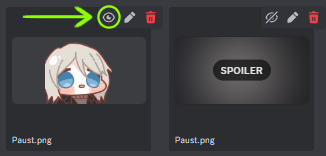

Welcome, Manager!
This page contains a full list of every single game mechanic or lore piece relevant enough to be considered a spoiler, with explanations for all the reasons they are (not) considered a spoiler within the server.
There are three main sections for spoilers, each representing a mainline Project Moon game. Within each section, there will be subcategories with a general description, along with a full list of spoilers and exceptions, with explanations if deemed necessary.
Memorizing all of the details is not necessary, this list is meant solely to clarify what is and isn't a spoiler down to specifics. For much of the same reason, we advise you to not read any of the togglable sections if you want to have a spoiler-free experience , as they provide more than necessary if you only wish to learn what to generally be careful about talking without a spoiler tag.
If you come by a mistake or believe to have found an inaccuracy/contradiction, please contact @yguana_ through Discord DM's.
HOW TO USE SPOILER TAGS
Contents hereby refered to as a spoiler in certain sections may still be posted on them, but they will require a spoiler tag.
TEXT TAGS
Place two vertical bar characters (||) inbetween the spoiler information...
||like this||
...to make it require a click to see.
Adding a brief indicator of what game/progression stage the spoiler refers to also goes a long way:
MEDIA TAGS
When attatching an image or video to a message, Discord allows you to toggle an initial spoiler blur to it:
The button is very easy to see on desktop, but it requires tapping the image on mobile to call for an image property menu.
If you sent media containing a spoiler by mistake, you may remove the attachment and edit the message to contain the embed link, spoilered trough the text tag method, if deleting the image is not desirable.
LOBOTOMY CORPORATION
Excluded channels:
#lobotomy-spoilers
#lobotomy-lounge
Ruina Category
Limbus Category
GAMEPLAY
All regular days are considered spoiler free. This extends to abnormality information, E.G.O, regular missions, and department researches. You can freely discuss the two optional bossfights (Whitenight and Apocalypse Bird). The existence of Core supressions is not a spoiler, though any further information must be explained behind spoiler tags. Days 46 through 50 also fall under the spoiler classification.
- Core supressions details;
- Gameplay gimmicks (Malkuth's randomized works, Yesod screen distortions, etc.);
- Animated Sephirah Meltdown;
- Screen Filters;
- Soundtracks used;
- Core supressions rewards;
- Days 46-49 (Hell Week);
- Architecture department (All appearances, deployment phase HUD);
- White Ordeals (Entities, entrance/defeat text, HUD indicator, etc.);
- Return of Core Supression Modifiers;
- Soundtracks used;
- Day 50;
- Changes made within the facility;
- Soundtracks used;
- Game credits;
- Menu alterations post game completion.
- Existence of Core supressions;
- Non-specific visual indicators on the deployment phase;
- Explanation of the Atziluth trap (Where you're locked from doing Core Supressions past day 46);
- Requirements for the true ending (not ending itself).
STORY
In general, all characters are only spoiler-free on a surface level. Angela, X, A and B may be discussed within the context and information provided by the game's early sections without any spoiler tags being required. The same applies to the Sephirah during their first introductions. Any flashbacks or other means used to expose backstory enters spoiler territory. The existence of Binah and Hokma do not count as spoilers.
- All text and custom CG art from the cutscenes displayed upon unlocking and finishing a Core Supression;
- Names, appearances and backstories of the Sephirah's past lives;
- Elijah;
- Gabriel;
- Michelle;
- Giovanni;
- Lisa;
- Enoch;
- Daniel;
- Kali / The Red Mist;
- Garion (includes H.Corp lore revealed in later games);
- Benjamin;
- Ayin, Carmen;
- Full names and appearance;
- Current whereabouts in the game's timeline;
- Backstory;
- Sephirah filter-free / box form appearances (including in gameplay);
- Hydraulic press scene;
- The Bucket and the Well;
- Cogito;
- The Seed of Light Project;
- The Script;
- Demonstration of the Extraction process;
- All Architecture department sepirah:
- Abel;
- Abram;
- Adam;
- True ending cutscene.
- First apperance of Carmen's silhouette;
- Carmen's mention within Forsaken Muderer's E.G.O description, in a context vacuum.
LIBRARY OF RUINA
RECEPTIONS
Any and all receptions above the Urban Nightmare Level are classified as a general spoiler. This includes pages, characters (including unnamed extra enemies), cutscenes, dialogue and lore. If their respective organizations or individual characters are mentioned previously in the game, only the new content is considered a spoiler.
STAR OF THE CITY
Excluded channels:
#ruina-star-of-city
#ruina-impuritas
#ruina-spoilers
#star-of-city-deck-design
#impuritas-deck-design
#ruina-mods
#ruina-modding
#spoiler-ruina-fan-content
Limbus Category
- The Thumb's pages, battle appearances and story;
- Katriel;
- Denis
- Boris;
- Kalo;
- The Index's new pages, battle appearances and story;
- Esther;
- Gloria
- Hubert;
- 얀샋ㄷ요무's (Distorted Yan) pages, battle appearances and story;
- 얀샋ㄷ요무;
- Moirai (The Weaver);
- Blue Reverberation's (Church of Gears) pages, battle appearances and story;
- Church of Gears Worshipers;
- Argalia
- The Red Mist's pages, battle appearances and story;
- The Purple Tear's pages, battle appearances and story;
- Liu Association and Xiao's pages, battle appearances and story;
- Mei;
- Cecil;
- Lowell;
- Chun;
- Miris;
- Xiao;
- Cane Office pages, battle appearances and story;
- Bada;
- Martina;
- Nemo;
- R. Corp pages, battle appearances and story;
- Myo;
- Maxim;
- Rudolph;
- Nikolai;
- General invitation's credenza book lore;
- Dong-hwan;
- Night Awls + Allen;
- Udjat;
- Mirae Life Insurance + Irina;
- Leaflet Workshop + Yae;
- Bayard's Office.
- Details mentioned in Limbus about specific organizations, in a context vacuum;
- Liu Association's general fire theme;
- Church of Gear Worshippers' existence;
- R. Corp's clone arena, as described by R. Corp Meursault's uptie story;
- Appearances or mentions of characters before their fights, in cutscenes and credenza, in a context vacuum;
- The existence of The Index, as well as their Urban Nightmare fight;
- Yan's apperances in cutscenes;
- Gloria's apperances in cutscenes;
- Argalia's apperances in cutscenes;
- The existence of The Purple Tear, as mentioned in the Canard intro cutscene, and credenza entries;
- Appearances of characters which appeared in Lobotomy Corporation;
- Kali/The Red Mist;
- Myo.
- 'Brace up' card ilustration and name, in a context vacuum;
IMPURITAS CIVITATIS
Excluded channels:
#ruina-impuritas
#ruina-spoilers
#impuritas-deck-design
#ruina-mods
#ruina-modding
#spoiler-ruina-fan-content
Limbus Category
- Hana Association's pages, battle appearances and story;
- Mirinae;
- Harold;
- Olivier;
- Angelica's name reveal;
- The Reverberation Ensemble and The Reverberation Ensemble Distorted's pages, battle appearances and story;
- Philip (Ensemble);
- Eileen (Ensemble);
- Bremen;
- Greta;
- Oswald (Ensemble);
- Tanya (Ensemble);
- Jae-heon (Ensemble);
- Puppet Angelica;
- Elena (Ensemble);
- The Vermillion Cross;
- Pluto;
- Argalia;
- The Black Silence;
- Keypage and new pages;
- All reception phases;
- Smoke War monster;
- Details mentioned in Limbus about specific organizations, in a context vacuum;
- Hana Association's outfit.
- Appearances or mentions of any Reverberation Ensemble members before their fight, be it through cutscenes or fights;
- Philip's previous forms (Dawn Office, Waxen pinion/Unstable EGO, Crying Children), cutscene appearances and story;
- Eileen's previous cutscene appearances and story;
- Greta's previous cutscene appearances and story;
- Oswald's previous cutscene appearances and story;
- Tanya's previous cutscene appearances and story;
- Jae-heon's previous form (Disguised), previous cutscene appearances and story;
- Elena's previous form (Disguised), previous cutscene appearances and story;
- Pluto's previous cutscene appearances and story;
- Argalia's previous battle appearances, cutscene appearances and story;
- Appearances or mentions of characters before their fights, in cutscenes and credenza, in a context vacuum;
- The existence of The Black Silence, as mentioned in the Musicians of Bremen, The Thumb's cutscenes, and credenza entries;
REALIZATIONS
All realizations, regardless of point in the game, are considered spoilers in channels without spoiler immunities for a specific progression stage. This includes all cutscenes, gameplay gimmicks, rewards and changes in apperance to reoccuring characters. You may explain the general concept of realizations without it being considered a spoiler.
URBAN NIGHTMARE
Excluded channels:
#ruina-star-of-city
#ruina-impuritas
#ruina-spoilers
#star-of-city-deck-design
#impuritas-deck-design
#ruina-mods
#ruina-modding
#spoiler-ruina-fan-content
Limbus Category
- New pages, passives, and gimmicks;
- Changes to Angela's outfit;
- Pre-fight and post-fight cutscenes, as well as new story details contained within;
- Apperance of already introduced Abnormalities/EGO without previous books:
- Snow White's Apple/Green Stem;
- Der Freischütz/Magic Bullet.
- Aspects and details regarding Angela's story previously mentioned in Lobotomy Corporation.
STAR OF THE CITY
Excluded channels:
#ruina-star-of-city
#ruina-impuritas
#ruina-spoilers
#star-of-city-deck-design
#impuritas-deck-design
#ruina-mods
#ruina-modding
#spoiler-ruina-fan-content
Limbus Category
- New pages, passives, and gimmicks;
- Changes to Angela's and Roland's outfits;
- Pre-fight, post-fight cutscenes and new story details contained within;
- Apperance of Abnormalities/EGO without previous books:
- Dream of a Black Swan;
- The Silent Orchestra/Da Capo;
- Jester of Nihil;
- Oz/The Adult who tells Lies;
- Nothing There/Mimicry.
IMPURITAS CIVITATIS
Excluded channels:
#ruina-impuritas
#ruina-spoilers
#impuritas-deck-design
#ruina-mods
#ruina-modding
#spoiler-ruina-fan-content
Limbus Category
- New pages, passives, and gimmicks;
- Changes to Angela's and Roland's outfits;
- Pre-fight, post-fight cutscenes and new story details contained within;
- Apperance of already introduced Abnormalities/EGO without previous books:
- Apocalypse Bird/Twilight;
- Whitenight/Prophet/Paradise Lost;
- One Sin and Hundreds of Good Deeds.
- Silent Girl;
- References to these abnormalities in a context vacuum, only by their appearances in older Lobotomy Corporation builds or trailers;
- Silent Girl;
LIMBUS COMPANY

NEWCOMERS + HELP SPECIFIC
Excluded channels:
Hub Section
Lobotomy Corporation Section
Ruina Section
#limbus-discussions
#limbus-lounge
#limbus-spoilers
#limbus-fan-content
#limbus-creator-content
#limbus-character-workshop
#limbus-asset-posting
#limbus-showcase
#limbus-datamining
As #limbus-newcomers and #limbus-help are meant to/end up housing players who have just joined the Project Moon community, there are more restrictions when it comes to spoilers. Notably, all stages which present a boss in a main canto are considered spoilers. This includes gameplay, cutscenes and the contextualized music used in them.
This section was originally written by @kavtech and @eadenly.
- Boss fights and cutscenes played on boss fight stages from main Cantos which contain unique soundtracks (only played in that scenario or rematches in Mirror Dungeons);
- Kromer;
- Spicebush Dongbaek;
- Dongrang;
- Ricardo;
- Pequod Trio;
- Gasharpoon EGO Ahab;
- Heathcliff?/Erlking Heath;
- Distorted Heathcliff;
- Nelly;
- Every Cathy;
- The Barber;
- Dulcinea;
- The Priest (Bloodfiend Trio);
- Sancho;
- Don Quixote (Father);
- Night Drifter of the Drunken Palm;
- Jia Qiu;
- Vergillius' EGO activation;
- Garion's apperance;
- Appearances or mentions of main Canto bosses before their fight, if the mention occurred outside of a previously outlined spoiler context (stage without unique background).
- Kromer;
- Dongbaek (Non-Sunshower, Non-spicebush);
- Dongrang;
- Pequod Trio;
- Nelly.
- The Priest;
- Jia Qiu;
CURRENT SPOILERS
As Limbus is a constantly updating game, we aim to enforce a spoiler-free experience within the server for at least 1 week when new content is released. The exceptions for this time requirement are all channels restricted behind the "Ongoing PM Content" Role, in which only 12 hours of release are needed for any content to be unclassified as a spoiler, and very specifc denoted threads which have no restrictions, such as #[ALL SPOILERS ALLOWED!] Lore Thread. Outside of these clauses, all bosses from the most recent Canto are considered spoilers.
- Relevant cutscenes and story details revealed in Canto 8 part 3;
- Zilu cutscene;
- The Elders' appearance;
- The Anamnaworm;
- Lei Heng's cutscene;
- New details regarding Hong Lu and Xichun's interactions as children;
- New details regarding Jia Qiu/ Kong Qiu's backstory;
- Boss fights and cutscenes played on boss fight stages from the most recent Canto which contain unique soundtracks (only played in that scenario or rematches in Mirror Dungeons);
- Lei Heng;
- Jia Huan & Gubo;
- Jia Mu;
- Appearances or mentions of current Canto bosses before their fight, if the mention occurred outside of a previously outlined spoiler context (stage without unique background);
- Lei Heng;
- Jia Huan & Gubo;
- Jia Mu;